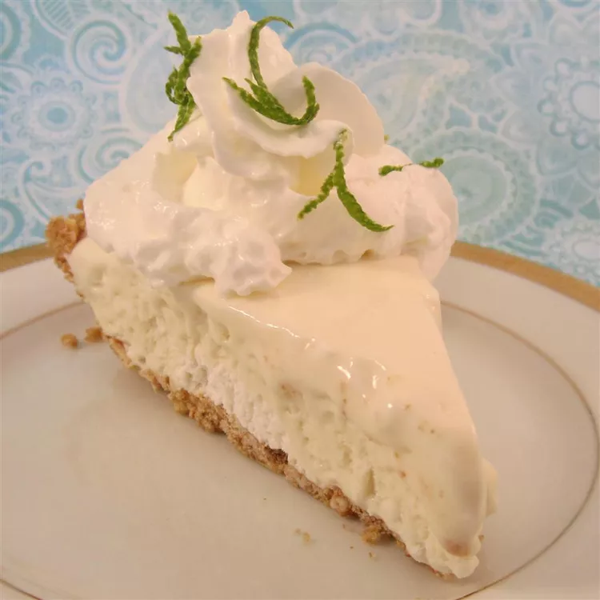

Frozen Margarita Pie
This frozen margarita pie is a refreshing end to a meal. It is always a
big hit when served at gatherings. Enjoy!
Ingredients
Crust:
- 1 cup finely crushed pretzels
- ¼ cup white sugar
- ⅓ cup margarine, melted
Filling:
- 1 (14 ounce) can sweetened condensed milk
- ⅓ cup frozen limeade concentrate, thawed
- 2 tablespoons tequila
- 1 tablespoon orange liqueur
- 3 drops green food coloring, or as needed (Optional)
- 1 cup heavy whipping cream
- 1 lime, sliced (Optional)
Directions
- Preheat the oven to 375 degrees F (190 degrees C).
-
Mix pretzels and sugar together in a bowl; stir in margarine until
evenly incorporated. Spoon mixture into a 9-inch pie plate; press into
the bottom and sides of the plate to form a firm, even crust.
-
Bake crust in the preheated oven until edges are lightly browned, about
5 minutes. Cool on a wire rack.
-
Mix sweetened condensed milk, limeade concentrate, tequila, orange
liqueur, and green food coloring in a large bowl.
-
Beat cream in a glass or metal bowl until soft peaks form. Lift your
beater or whisk straight up: whipped cream should form soft mounds
rather than a sharp peak. Fold whipped cream into sweetened condensed
milk mixture. Spoon filling into cooled crust.
-
Cover pie with plastic wrap and freeze until firm, about 4 hours. Let
stand for 10 minutes before serving; garnish with lime slices.
Return to homepage